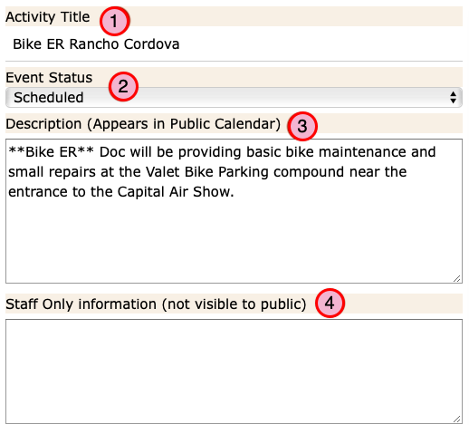

How to manage Attendance Records¶
(Jump to Creating and Editing Attendance Records)
The Attendance records are used to record the hours that users actually worked a Job.
When a user signs up for a job, or is assigned a job by you, a corresponding Attendance Record is created.
Attendance records are used to track who did what for future reference. They are also very helpful in the case of paid staff so that you are able to pay them for their actual hours worked.
Attendance List¶
To open the Attendance record list, select Staffing Admin –> Attendance from the navigation menu.
The Attendance list will open.
Because there will be a lot of Attendance records in the list view there is a special search form provided at the top of the list.
- If needed, you can create a new Attendance record for special “Ad Hoc” tasks.
Ad Hoc tasks are things that someone did, which you want to record, but was not part of an actual Event. These are often routine functions that the organization needs to do.
In particular is a task is a paid staff function, you would want to record it here so it will be included in the Attendance Report.
- Search for text.
Type something in the text box to search the items in the list. Use the drop down list to indicate which column to search in.
Save Your Search: Be sure to check the Save Search box so all your search criteria are preserved after you return from editing a record.
- Search by Job Dates.
Enter the start and/or end dates to display in the list so you can focus on current events.
{kind=link}
Attendance Report¶
Click the Attendance Report button to export a CSV (comma separated values) report of the Attendance records currently displayed in the list.
This report can be opened in a spreadsheet program if you want to manipulate the data to bend it to your purposes such as submitting work hours for payroll.
Creating and Editing Attendance Records¶
The form presented varies somewhat depending on whether you are editing an Event based record or a record created for an Ad Hoc task.
Event Based Attendance¶
To edit an event based Attendance record, click on a record in the list to open the detail form.
The Event info and date and time of the job are included automatically.

- Select the input style you prefer.
You can use the tabs to switch between form styles.
One style allows you to enter the start and end times, the other allows you to enter the start time and the total hours worked.
- No Show?
If the user assigned to the job did not show you can click the No Show check box and save the record.
This option is designed to indicate that someone was assigned a job and did not fulfill their commitment.
If, on the other hand, the user had made arrangements to miss the shift or had informed you that they would not be able to make it, go to the Job record and remove the users assignment. This will delete the corresponding Attendance record as well.
- Enter the Attendance times.
If the user attended the full shift, you do not need to do anything. Just save the record.
Otherwise enter the time the user started the shift and either the time they left or the number of hours worked depending on the input style you’ve chosen.
- Enter Milage.
If the user had reimbursable milage, enter the number of miles here.
- Comments?
You can enter any comments you’d like here.
{kind=link}
{kind=link}